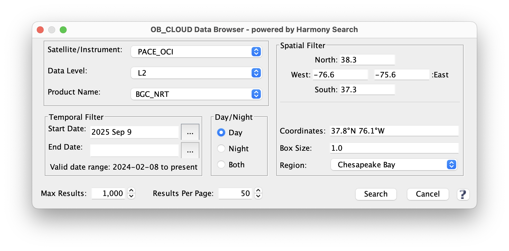
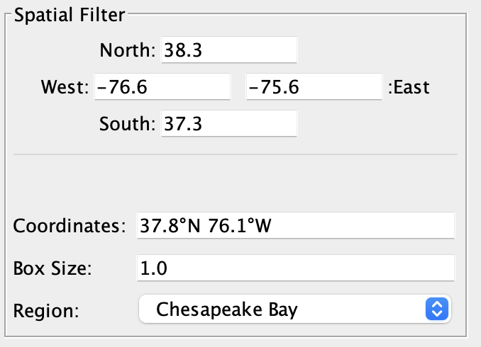
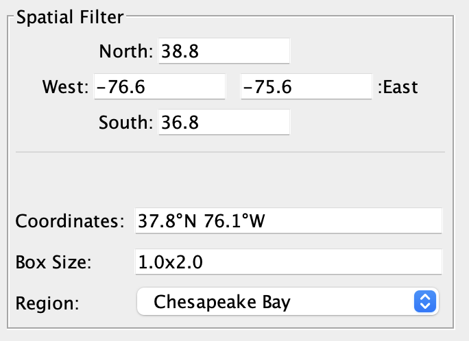
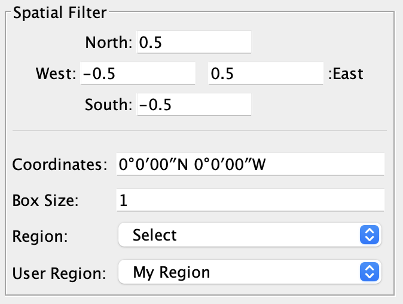

| OB_CLOUD Data Browser | |
The OB_CLOUD Data Browser is a tool for browsing the NASA Earthdata cloud for the Ocean Biology DAAC satellite data.

Image 1: OB_CLOUD Data Browser
The search for satellite data can be restricted to a user specific geographic region of interest. This is done through parameters known geographic 'bounding_box', which is defined by the fields: North, South, West and East. The search will only return satellite data files which match in part or in full the user requested bounding_box. Keep in mind that satellite data (such as unprojected level-2 data) is oriented to the actual observation of the earth made by the satellite, and is not precisely represented by a North, South, West, East bounding box. So this can result in some extra files returned by the search which do not actually have data in the user requested bounding box.
The internal format which is ultimately used for the spatial fields is the decimal format. However, the browser tool will accept and convert most any format. The following table illustrates the full list of optional formats (shown in example for a sample point in the Chesapeake Bay).
| Format | Lat | Lon |
| Decimal_Degrees (Numeric) | 37.85 | -76.15 |
| Decimal_Degrees (Compass) | 37.8°N | 76.15°W |
| Degrees (Numeric) | 37° | -76° |
| Degrees (Compass) | 37°N | 76°W |
| Degrees_Minutes (Numeric) | 37°48′ | -76°6′ |
| Degrees_Minutes (Compass) | 37°48′N | 76°6′W |
| Degrees_Minutes_Seconds (Numeric) | 37°48′00″ | -76°6′00″ |
| Degrees_Minutes_Seconds (Compass) | 37°48′00″N | 76°6′00″W |
Note: for minutes and seconds: the single quote and double quote characters can optionally be used instead of the alphanumeric prime characters.
There are several accessory fields which can aid in populating the North, South, West and East fields. These fields themselves are not actually used in the search.

Image 2: OB_CLOUD Data Browser

Image 3: OB_CLOUD Data Browser

Image 4: OB_CLOUD Data Browser